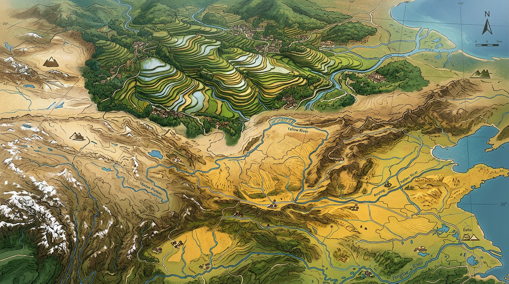

🎓 初中地理 · 八年级下册
为什么黑龙江能种水稻，新疆产长绒棉，青藏高原以放牧为主？
同在中国，为什么南北农业差异如此之大？
能够识别中国三大农业区域的分布位置，并结合地图描述各区域的地理范围。
能够分析气候、地形、水源等自然因素如何共同决定农业分布格局。
能够评价"因地制宜"原则在中国农业发展中的重要意义，并解决实际问题。
点击时代按钮切换疆域版图；悬停高亮边界；点击红色城市标记查看详情。
回答以下问题，帮助系统为你匹配合适的学习路径。
农业分布不是随机的，而是自然条件与社会经济因素综合作用的结果。理解这一点，你就能解释：
观察下方地图：①找出三大农业区各自的位置；②找到秦岭—淮河一线；③找出标注的代表性农业城市的分布规律。
| 农业区 | 范围 | 主要作物 | 农业类型 |
|---|---|---|---|
| 东部季风区 | 大兴安岭以东、青藏高原东部、秦岭—淮河以南 | 水稻、油菜、茶叶、柑橘 | 水田农业为主 |
| 西北内陆区 | 秦岭—淮河以北、大兴安岭以西、青藏高原北部 | 小麦、棉花、瓜果、畜牧业 | 灌溉农业 + 绿洲农业 |
| 青藏高寒区 | 青藏高原全部（海拔3000m以上） | 青稞、牦牛、绵羊 | 高寒畜牧业 + 河谷农业 |
农业分布的形成，是气候、地形、水源、社会经济四大因素共同作用的结果。每个因素分别对应了哪种农业类型的形成？
热量带决定作物种类
年降水量决定农业类型
平原适合种植业
高原适合畜牧业
灌溉农业离不开水源
绿洲农业就是最好证明
城市附近发展蔬菜种植
交通沿线发展商品粮
将以下四个因素按正确的因果顺序排列，形成完整的农业分布因果链：
💡 提示：从"源头"（气候）开始，到"结果"（产区）结束。拖动卡片到下方区域排列。
秦岭—淮河一线，是中国最重要的地理分界线。它不仅是南北方气候的分水岭，也是农业类型的分界线。站在这条线的两侧，你能看到完全不同的农业景象。
| 对比项目 | 秦岭—淮河以北（北方） | 秦岭—淮河以南（南方） |
|---|---|---|
| 气候类型 | 温带季风气候 | 亚热带季风气候 |
| 年降水量 | 400~800 mm | 800~1600 mm |
| 一月均温 | < 0°C（结冰） | > 0°C（不结冰） |
| 主要粮食作物 | 小麦、玉米 | 水稻 |
| 作物熟制 | 一年一熟 / 两年三熟 | 一年两熟 / 一年三熟 |
| 典型农产品 | 苹果、梨、花生 | 水稻、柑橘、甘蔗 |
秦岭—淮河分界线的本质是热量差异和降水差异的综合反映。这条线以南，水热条件充足，适合水稻种植；这条线以北，热量不足、降水偏少，形成了以旱作农业为主的格局。
观察中国农业区分布图，找出三大农业区各自的地理位置和主要作物种类。
将农业分布分解为四个影响因素：气候、地形、水源、市场，分别分析各自作用。
用因果关系解释：为什么东北能成为"北大仓"？为什么新疆适合棉花？
对比南北方农业：水稻 vs 小麦、一年两熟 vs 一年一熟的深层原因是什么？
如果气候变暖，秦岭—淮河分界线会北移吗？这对农业有什么影响？
三大农业区：东部季风区、西北内陆区、青藏高寒区
秦岭—淮河一线是南北方农业的分水岭
气候 + 地形 + 水源 + 市场（社会经济）
因地制宜——农业布局必须顺应自然条件
查阅资料，回答：你的家乡（或学校所在城市）属于哪个农业区？主要的农作物是什么？这些作物与当地的气候、地形条件有什么关系？
💡 提示：用"因地制宜"的视角，分析自然条件如何影响农业生产。
与前测对比，看看你进步了多少！